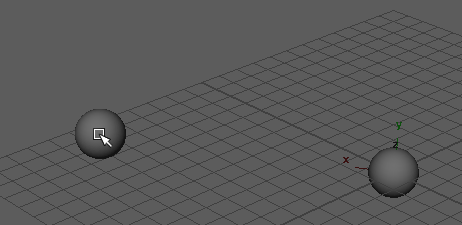

本节包括实施目标约束的两个示例。
将球体对准球体
设置两个球体
- 创建 NURBS 球体。
- 移动球体离开场景的中心一段距离。
- 创建另一个 NURBS 球体。将其保持在场景的原点。
- 显示球体的局部旋转轴（“显示 > 变换显示 > 局部旋转轴”(Display > Transform Display > Local Rotation Axes)）。
创建目标约束
- 选择移动过的球体 (nurbsSphere1)，然后选择原点处的球体。
- 如果确定约束选项具有其默认设置，请选择“约束 > 目标”(Constrain > Aim)。（若要确定在使用默认值，请选择约束 > 目标(Constrain > Aim) >
 。单击“重置设置”(Reset Settings)，然后单击“添加”(Add)）。
。单击“重置设置”(Reset Settings)，然后单击“添加”(Add)）。
使用目标约束
选择移动过的球体 (nurbsSphere1)，并选择“移动工具”(Move Tool)。移动该球体时，其他球体 (nurbsSphere2) 将相应地进行旋转。

请注意 nurbsSphere2 的局部旋转 X 轴将始终指向 nurbsSphere1。另外，请注意 nurbsSphere2 的局部旋转 Y 轴将始终试图尽可能靠近场景的 Y 轴，并与之指向同一方向。
默认情况下，目标向量将使 nurbsSphere2 的局部旋转 X 轴指向 nurbsSphere1。另外，默认情况下，上方向向量将引起 nurbsSphere2 的 Y 轴自身尽可能近地与场景的 Y 轴对齐。
将圆锥体对准球体
创建一个球体和一个圆锥体
- 创建 NURBS 球体。
- 移动球体离开场景的原点一段距离。
- 创建 NURBS 圆锥体。
创建目标约束
- 选择球体，然后选择圆锥体。
- 选择“约束 > 目标”(Constrain > Aim) > 。
- 将“目标向量”(Aim Vector)设定为 0.0, 1.0, 0.0。（默认值为 1.0, 0.0, 0.0。）
- 将“上方向向量”(Up Vector)设定为 0.0, 0.0, 1.0。
- 将“世界上方向向量”(World Up Vector)设定为 0.0, 0.0, 1.0。
- 单击“添加”(Add)。
- 现在，已约束圆锥体对准球体了。
使用约束
选择球体，并选择“移动工具”(Move Tool)。移动球体时，圆锥体将始终指向球体。